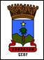

Conhecendo o Território Bacia do Paramirim Município de Macaúbas
| Temas das pesquisas: | Dados: |
|---|---|
| Municípios Limítrofes |
|
| Área | 2459,102 km² de área(2022). |
| Altitude | Situado a 690 metros de altitude. |
| Coordenadas geográficas | Latitude 13° 01' 10" Sul | Longitude 42° 41' 55" Oeste. |
| Clima | O clima macaubense é tropical com estação seca. |
| Temperatura Média | 24,2°C |
| Vegetação | A cobertura vegetal de Macaúbas é formada pela Caatinga, Cerrado e um pouco da Mata Atlântica |
| Hidrografia | O município faz parte da região hidrográfica do São Francisco. O abastecimento de água é feito pelo serviço autônomo de Água e Esgoto (SAAE), da prefeitura da cidade, atuante desde 1977. A capitania fluvial do São Francisco abrange o território, administrado pela agência Fluvial de Bom Jesus da Lapa |
| População Absoluta | 41,859 habitantes(2022). |
| População Relativa | 17,02 hab/km² |
| Principais Atividades Econômicas | A economia de Macaúbas se sustenta basicamente da agropecuária, sendo que sua agricultura é composta em sua grande maioria por lavouras de pequeno porte ou de subsistência. A produção é baseada principalmente no feijão catador vendido para o norte e nordeste do país |
| Principais Manifestações Culturais |
|
| Equipamentos Culturais |
|
| Unidades de Saúde Existentes |
|
| Esgotamento Sanitário(%) | 24,7% da população tem acesso aos serviços de esgotamento sanitário adequado(2010) |
| Áreas de APP | -- |
| IDH | 0,609 |
| Plano Diretor | Criado em 2007, o Plano Diretor do município de Macaúbas, é uma importante ferramenta para o seu desenvolvimento, uso e ocupação do solo, além de sua ordenação, nele são identificadas e delimitadas as áreas urbanas e rurais e traçadas as estratégias para o seu desenvolvimento, buscando assim assegurar os direitos. |
Breve História do município
Os primeiros habitantes do território macaubense eram indígenas, de etnia ainda questionada: alguns estudos afirmam que eram os tupinaés, enquanto outras pesquisas determinam que o local foi povoado por tuxás, provenientes de espaços ribeirinhos do Rio São Francisco. A Enciclopédia dos Municípios Brasileiros diz que, quando se iniciou a colonização de Macaúbas, ali existia uma taba de índios tuxás.
A primeira penetração do território do município deu-se com a expedição de Belchior Dias Moreia, que, entre 1595 (ou 1596) e 1604, percorreu os sertões de Sergipe e da Bahia, inclusive chegando às nascentes do Rio Paramirim. O historiador Basílio de Magalhães afirmou que Belchior chegou a uma aldeia indígena de nome Tubajaras, que provavelmente é hoje Macaúbas.
Na segunda metade do século XVII, Antônio Guedes de Brito criou seu grande latifúndio, a Casa da Ponte, dominando da região de Morro do Chapéu até o Norte de Minas. O latifúndio era dividido em fazendas, alugadas àqueles que queriam usar a terra. As fazendas mais destacadas do atual município eram as de Catolés, Contendas, Algodões, Saco da Errada, São José, São Joaquim, Santa Apolônia, Tamboril, Queimadas, Jurema, Lagoa Clara, Cambaitó, Pé da Serra, Curralinho e Quebra-Focinhos.
A colonização do território macaubense ocorreu em meados do século XVIII, quando desbravadores vindos dos territórios das vilas de Santo Antônio do Urubu de Cima e de Minas do Rio de Contas chegaram à região, à procura de ouro, mas acabaram se fixando por causa dos solos férteis, clima bom e água farta. Os colonizadores adquiriram sesmarias e também fazendas dos associados da Casa da Ponte.
No século XVIII, edificou-se, na região do bairro macaubense do Coité, uma capela em louvor a Nossa Senhora da Conceição, dentro da Fazenda dos Catolés, pertencente à Casa da Ponte.
Na década de 1810, surgia o Arraial de Lagoa Clara, provavelmente o povoado mais antigo do município.
Em 1819, o fazendeiro Inácio Alves da Silva comprou a Fazenda dos Catolés por 360 mil réis. Em agosto de 1826, este fazendeiro cedeu um terreno para a edificação de uma igreja maior em louvor a Nossa Senhora da Conceição, para substituir a antiga capela do Coité. Aberta a nova igreja, ao seu redor surgiram residências, originando o Arraial do Coité (hoje a sede de Macaúbas). Estando situado entre serras, o Arraial se desenvolveu aos poucos, por causa do comércio.
O processo de emancipação de Macaúbas, então pertencente à vila de Santo Antônio do Urubu de Cima (atual Paratinga), começou por um conflito do poder público nessa entidade administrativa. Entre 1822 e 1823, os moradores da Vila do Urubu produziram um ofício, solicitando um novo ouvidor, por não confiarem em quem estava exercendo a função. Francisco Pires de Almeida Freitas era o responsável pelo cargo àquela altura e a desconfiança da população se dava pelo fato de Freitas ter solicitado ao ministro do império a mudança da Justiça e Cartório de Urubu para o local do futuro Arraial do Coité, tendo como justificativa as febres ribeirinhas ocorridas em Urubu e a inundação do cartório pelas águas do Rio São Francisco. No entanto, em 10 de abril de 1823, a representação dos moradores da vila, por meio de sete documentos, se posicionou contra a decisão do ouvidor. Não adiantou: a portaria de 17 de dezembro de 1823 determinou a mudança da Justiça e Cartórios para o sítio de Macaúbas. A partir de 1823, o futuro local do Arraial passou a sediar os poderes públicos e ter cartório e juizado próprio. Sendo assim, todos os territórios que faziam parte da vila de Urubu, como Urubu, Bom Jesus da Lapa e Bom Jardim, passaram a prestar contas na nova sede da Comarca.
Por meio de Decreto Imperial de 6 de julho de 1832, o Arraial do Coité foi emancipado de Urubu e elevado à categoria de vila, com o nome Macaúbas, o qual se deve à abundância da palmeira macaúba, hoje em extinção no município. Com isso, a sede da Justiça e Cartório de Urubu teve sua mudança revista e foi novamente transferida para Urubu, quando foi fundada a Comarca do Urubu.
O início do funcionamento de Macaúbas como vila ocorreu com a sua instalação, em 23 de setembro de 1833, em cerimônia na casa do primeiro presidente da Câmara Municipal, Plácido de Souza Fagundes. Com o crescimento do povoado e a necessidade de uma paróquia para a realização de eleições, funcionamento do registro civil e a criação de escolas, a capela de Nossa Senhora da Conceição passou a ser a Freguesia e Paróquia de Nossa Senhora da Imaculada Conceição de Macaúbas, promovida pela Lei provincial nº 124, de 19 de maio de 1840, mesma lei que desmembrou a Vila do Monte Alto de Macaúbas, resultando em grande perda territorial. Foi primeiro vigário da Paróquia o Padre José Florêncio da Silva Pereira.
Na época, a vila, assim como outras regiões sertanejas, teve que lidar com o aumento da criminalidade e da escassez de recursos. Em 1860, ocorreu uma das piores secas no Sertão da Bahia, provocando a migração intensa de grande parte da população. Em Macaúbas, 225 pessoas morreram de fome. Outras secas, de menor impacto, aconteceram em anos e décadas seguintes.
Em 1878, ocorreu um episódio marcante na história de Macaúbas. As disputas entre Porfírio Brandão e a Família Seixas levaram à invasão da vila, episódio que teve grande repercussão e que, inclusive, foi objeto de crônica do famoso escritor Machado de Assis. Dez anos depois, em 1888, a escravidão no Brasil foi abolida pela Lei Áurea. Em Macaúbas, ela nunca fora dominante, pelo fato de grande parte da população não possuir dinheiro para a compra de escravos, e, com a abolição, ergueu-se o Cruzeiro da Liberdade.
Em 1889, ocorreu a Proclamação da República. Foi o primeiro intendente de Macaúbas o Cônego Firmino Soares, tio de Vital Soares, nomeado pelo Governo Estadual em exercício após a proclamação. Firmino ficou na intendência por poucos meses, até renunciar, assumindo em seu lugar Porfírio Brandão.
Entre a primeira metade da década de 1920 e o final da década de 1940, governou Macaúbas o Coronel Francisco Borges de Figueiredo Filho, conhecido como Francisquinho Borges, rival de José Queirós de Matos, irmão de Horácio de Matos. Houve lutas armadas entre Francisco e José, a ponto de que, em 1923, não foi comemorada Semana Santa em Macaúbas, por causa dos conflitos.
Pela lei estadual nº 1761, de 10 de junho de 1925, a vila foi elevada à categoria de cidade e distrito-sede municipal. Em 1962, os distritos de Botuporã, Caturama e Tanque Novo (os dois últimos hoje já emancipados) foram desmembrados para formar o novo município de Botuporã e, no mesmo ano, foi criado o município de Boquira, a partir dos distritos macaubenses de Boquira e Bucuituba. A partir daí, o município de Macaúbas é constituído de três distritos: Macaúbas (sede), Canatiba e Lagoa Clara.
Fonte: Veja em Contatos| Temas da pesquisas: | Dados sobre o município de Macaúbas-Bahia |
|---|---|
| Bandeira e Brasão de Armas |  |
| Origem do nome | Se deve à abundância da palmeira macaúba, hoje em extinção no município. |
| Padroeira | Nossa Senhora Imaculada Conceição. |
| Legislação Ambiental Municipal | Lei Nº 657 de 13 de junho de 2017, que institui a Política Municipal de Meio Ambiente, seus princípios, objetivos e diretrizes, cria o Sistema Municipal de Meio Ambiente – SISMUMA e estabelece os instrumentos para a gestão municipal e dá outras providencias. |
| Principais fontes de água |
|
| Unidade de Conservação | Não possui, mas é importante destacar o interesse da população para criá-la, sendo que os estudos para as áreas já foram realizados, sendo estas áreas denominadas de Serra de Macaúbas, Serra do Carrapato, Região do Tinguís, Sonhém, Coqueiros e Gruta do Açude. |
| Principais fontes de energia renovável | Empresas que prestam serviços de instalação de placas para captação de energia solar: Elétrica HS – Soluções em Engenharia Elétrica e Macaúbas Solar. |
| Empreendimentos minerários |
|
| Plano de Saneamento Básico | Plano Municipal de Saneamento Básico e Plano Municipal de Gestão Integrada de Resíduos Sólidos. |
| Projetos de reciclagem | A Associação de Catadores de Material Reciclável de Macaúbas - ACATAM. |
| Descarte de lixo eletrônico | Não possui. |
| Maiores impactos ambientais |
|
| Conselhos municipais |
|
| Referências |
|